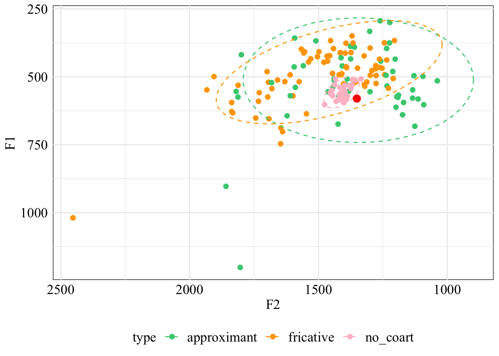
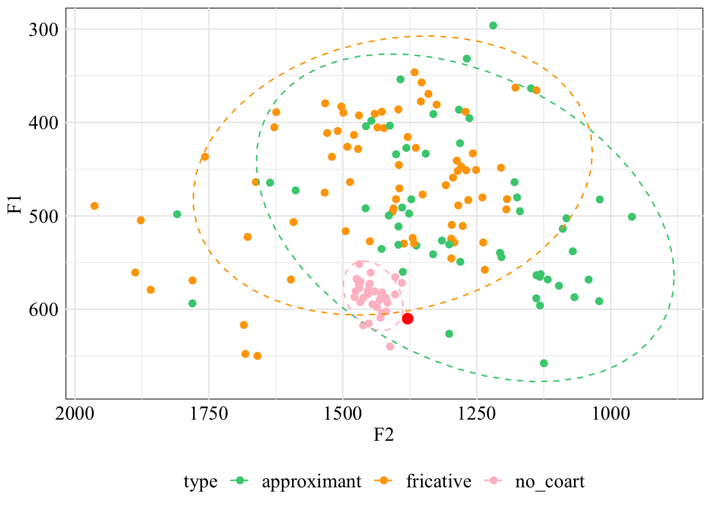

Formant analysis and classifier results
Onset F1 and F2 for approximants and fricatives
Onset F1 and F2 for approximants, fricatives, and no coarticulation

Midpoint F1 and F2 for approximants and fricatives

Midpoint F1 and F2 for approximants, fricatives, and no coarticulation

Offset F1 and F2 for approximants and fricatives

Offset F1 and F2 for approximants, fricatives, and no coarticulation
Formant trajectories by coarticulated consonants
Formant trajectories by type
Onset classifier with 3 levels
Confusion Matrix and Statistics
y_pred
approximant fricative no_coart
approximant 11 15 0
fricative 1 36 1
no_coart 2 0 14
Overall Statistics
Accuracy : 0.7625
95% CI : (0.6542, 0.8505)
No Information Rate : 0.6375
P-Value [Acc > NIR] : 0.011766
Kappa : 0.606
Mcnemar's Test P-Value : 0.001615
Statistics by Class:
Class: approximant Class: fricative Class: no_coart
Sensitivity 0.7857 0.7059 0.9333
Specificity 0.7727 0.9310 0.9692
Pos Pred Value 0.4231 0.9474 0.8750
Neg Pred Value 0.9444 0.6429 0.9844
Prevalence 0.1750 0.6375 0.1875
Detection Rate 0.1375 0.4500 0.1750
Detection Prevalence 0.3250 0.4750 0.2000
Balanced Accuracy 0.7792 0.8185 0.9513Midpoint classifier with 3 levels
Confusion Matrix and Statistics
y_pred
approximant fricative no_coart
approximant 22 5 0
fricative 1 36 0
no_coart 0 0 16
Overall Statistics
Accuracy : 0.925
95% CI : (0.8439, 0.972)
No Information Rate : 0.5125
P-Value [Acc > NIR] : 1.447e-15
Kappa : 0.8802
Mcnemar's Test P-Value : NA
Statistics by Class:
Class: approximant Class: fricative Class: no_coart
Sensitivity 0.9565 0.8780 1.0
Specificity 0.9123 0.9744 1.0
Pos Pred Value 0.8148 0.9730 1.0
Neg Pred Value 0.9811 0.8837 1.0
Prevalence 0.2875 0.5125 0.2
Detection Rate 0.2750 0.4500 0.2
Detection Prevalence 0.3375 0.4625 0.2
Balanced Accuracy 0.9344 0.9262 1.0Offset classifier with 3 levels
Confusion Matrix and Statistics
y_pred
approximant fricative no_coart
approximant 21 6 0
fricative 12 25 0
no_coart 0 0 16
Overall Statistics
Accuracy : 0.775
95% CI : (0.6679, 0.8609)
No Information Rate : 0.4125
P-Value [Acc > NIR] : 4.409e-11
Kappa : 0.6493
Mcnemar's Test P-Value : NA
Statistics by Class:
Class: approximant Class: fricative Class: no_coart
Sensitivity 0.6364 0.8065 1.0
Specificity 0.8723 0.7551 1.0
Pos Pred Value 0.7778 0.6757 1.0
Neg Pred Value 0.7736 0.8605 1.0
Prevalence 0.4125 0.3875 0.2
Detection Rate 0.2625 0.3125 0.2
Detection Prevalence 0.3375 0.4625 0.2
Balanced Accuracy 0.7544 0.7808 1.0